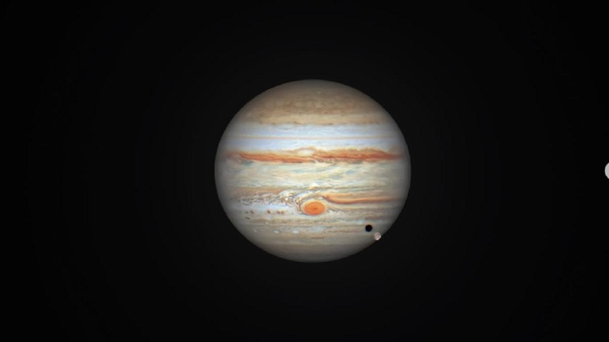

Юпитер: гигант Солнечной системы
Юпитер — самая большая планета Солнечной системы и пятый по удалённости от Солнца объект. Это газовый гигант, который по массе превосходит все остальные планеты вместе взятые примерно в 2,5 раза. Его изучение помогает учёным лучше понять процессы формирования планет и эволюцию всей Солнечной системы.

Основные характеристики
- Масса: около 318 масс Земли.
- Радиус: примерно 11 радиусов Земли (около 70 000 км).
- Состав: в основном водород и гелий, с небольшими примесями метана, аммиака, водяного пара и других соединений.
- Период вращения: около 9 часов 55 минут — это самая быстро вращающаяся планета в Солнечной системе.
- Орбитальный период: примерно 12 земных лет.
- Расстояние от Солнца: в среднем около 778 миллионов километров (5,2 астрономические единицы).
Великое Красное Пятно
Одна из самых узнаваемых особенностей Юпитера — Великое Красное Пятно. Это гигантский атмосферный вихрь, который наблюдают уже более 350 лет. Размеры пятна впечатляют: оно больше Земли. Хотя за последние десятилетия вихрь постепенно уменьшается, он остаётся одним из самых мощных штормов в Солнечной системе. Скорость ветра внутри него может достигать 430 км/ч.
Атмосфера и погодные явления
Атмосфера Юпитера — это бурлящий мир штормов и турбулентности. Планета известна своими характерными полосами — светлыми зонами и тёмными поясами. Они образуются из‑за конвекции в атмосфере и быстрого вращения планеты. Помимо Великого Красного Пятна, на Юпитере есть множество других вихрей и штормов, которые могут существовать годами.
Температура в верхних слоях атмосферы крайне низкая (около −145 °C), но по мере погружения вглубь давление и температура резко возрастают. В центре планеты, по современным представлениям, может находиться твёрдое ядро, окружённое слоем металлического водорода — экзотического состояния вещества, которое возникает при колоссальном давлении.
Магнитное поле и радиация
Юпитер обладает самым мощным магнитным полем среди всех планет Солнечной системы — оно примерно в 20 000 раз сильнее земного. Это поле создаёт обширные радиационные пояса, которые представляют серьёзную опасность для космических аппаратов. Из‑за сильной радиации электроника зондов должна быть специально защищена.
Спутники и кольца
У Юпитера более 90 известных спутников, и их число продолжает расти по мере новых наблюдений. Самые крупные и известные из них — галилеевы спутники: Ио, Европа, Ганимед и Каллисто.
- Ио — самый вулканически активный объект в Солнечной системе.
- Европа — один из главных кандидатов на наличие внеземной жизни: под её ледяной коркой скрывается глобальный океан.
- Ганимед — крупнейший спутник в Солнечной системе, у него даже есть собственное магнитное поле.
- Каллисто — один из самых старых и сильно кратерированных объектов в Солнечной системе.
Кроме спутников, у Юпитера есть система слабых колец, состоящих в основном из пыли. Они были открыты сравнительно недавно — в 1979 году, благодаря космическому аппарату «Вояджер‑1».
Исследование Юпитера
Человечество изучает Юпитер с помощью наземных телескопов и космических миссий. Среди самых значимых проектов:
- «Пионер‑10» и «Пионер‑11» — первые аппараты, пролетевшие мимо Юпитера и передавшие снимки и данные о его магнитосфере.
- «Вояджер‑1» и «Вояджер‑2» — открыли кольца Юпитера и сделали детальные снимки его спутников.
- «Галилео» — первый аппарат, вышедший на орбиту Юпитера; он изучал планету и её спутники в течение восьми лет.
- «Юнона» (Juno) — современная миссия NASA, которая исследует полярные области, магнитное поле и внутреннюю структуру Юпитера.
Значение для науки
Изучение Юпитера важно не только для понимания нашей Солнечной системы, но и для поиска экзопланет. Многие из обнаруженных планет за пределами Солнечной системы похожи на газовые гиганты, и Юпитер служит своего рода «моделью» для их изучения. Кроме того, мощное гравитационное поле Юпитера влияет на движение комет и астероидов, играя роль своеобразного «щита» для внутренних планет, включая Землю.